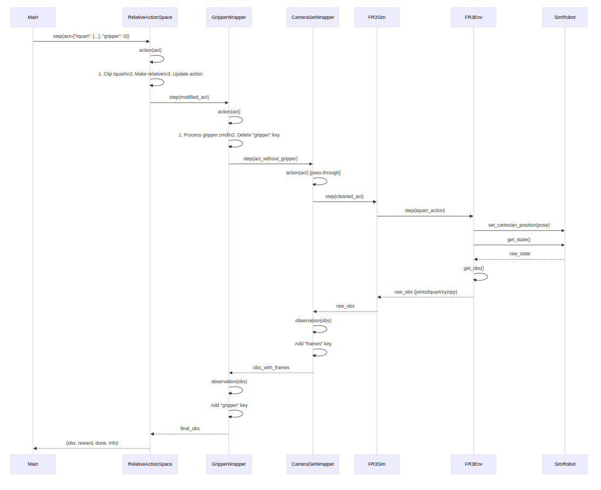

Action-Observation Flow#
wrapper Hierarchy#
Vertical Order:
Top: Highest-level wrapper (first applied)
Bottom: Base environment
Inheritance Notation:
Use (ParentClass) next to wrapper names
Wrapping Notation
Show ← wraps arrows between layers Here is a class hierarchy diagram:
{kind=link}
Flow#
RelativeActionSpace(ActionWrapper).step(act)2- Calls step function of ActionWrapper (→2)
ActionWrapper.step(act)Calls
RelativeActionSpace.action(act)
Calls
GripperWrapper.step(act)
RelativeActionSpace.action(act)Processes action:
{"tquart": [0.01, 0, 0, 0, 0, 0, 1], "gripper": 0}Operations:
Clips action within min/max limits
Makes action relative (current_pose + action)
Updates
action["tquart"]
GripperWrapper(ActObsInfoWrapper).step(act)→5. Calls
GripperWrapper.action(act)→6. Calls
CameraSetWrapper.step(act)→15. Calls
GripperWrapper.observation(obs)
GripperWrapper.action(act)Uses
act["gripper"]to open/close gripperOnly executes if state change needed
Deletes
"gripper"key from action dict
CameraSetWrapper(ActObsInfoWrapper).step(act)→7. Calls
CameraSetWrapper.action(act)→8. Calls
CameraSetWrapper(ActObsInfoWrapper).step(act)→14. Calls
CameraSetWrapper.observation(obs)
CameraSetWrapper.action(act)(Pass-through) Returns original action
CameraSetWrapper(ActObsInfoWrapper).step(act)→9. Calls
CameraSetWrapper.action(act)→10. Calls
FR3Sim.step(act)
CameraSetWrapper.action(act)(Pass-through) Returns original action
FR3Sim.step(act)→11. Calls
FR3Env.step(act)Executes:
self.sim.step_until_convergence() state = self.sim_robot.get_state()
Returns observation
FR3Env.step(act)Sets new pose:
self.robot.set_cartesian_position( common.Pose( translation=action_dict[self.tquart_key][:3], quaternion=action_dict[self.tquart_key][3:] ) )
→12. Calls
FR3Env.get_obs()
FR3Env.get_obs()Returns:
( tquart=np.concatenate([ self.robot.get_cartesian_position().translation(), self.robot.get_cartesian_position().rotation_q() ]), joints=self.robot.get_joint_position(), xyzrpy=self.robot.get_cartesian_position().xyzrpy() )
Shapes:
joints: (7,)tquart: (7,) [x,y,z, qx,qy,qz,qw]xyzrpy: (6,) [x,y,z, roll,pitch,yaw]
CameraSetWrapper.observation(obs)Adds camera data:
{ ...original_obs..., "frames": { "wrist": { "rgb": (256,256,3), "depth": (256,256,3) }, "default_free": { "wrist": { "rgb": (256,256,3), "depth": (256,256,3) } } } }
GripperWrapper.observation(obs)Adds gripper state:
{ ...previous_data..., "gripper": float }
Sequence Diagram#
